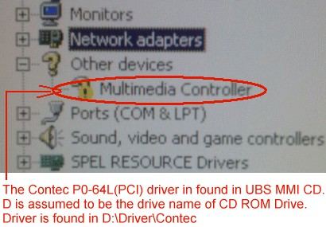

Service History
Subject: UBS09 show multimedia controller in system\hardware list and seems no driver installed
Handler Model: UBS (S/N: 151044, UBS09)
Controller: RC520 (S/N: 01-20500)
Date: 9 Jan 2013
Symptom
AMD UBS09 shows multimedia controller in system\hardware list and seems no driver installed, the other good UBS03 shows Multifunction adapters.
As you talked, it is for 7 segment LED usage, I'd like to know where can I get the driver for this Multimedia controller, can you help to check Normally which CD is used for this driver installation. Can you help to send the driver to us if you have?
Action
Below is the guide to re-install the Contec PO-64L(PCI) driver for 7segment LED display of UBS.
As mentioned, Contec PO-64L(PCI) is just for Binning display as an Output display and the port is not the same as the RS232C.
This board has no relation with the Contec COM-2 (PCI) card.

1) Insert UBS MMI CD into CD ROM Drive
2) Access the Windows 2000 Device Manager page and show the "Multimedia Controller"
3) Double-click "Multimedia Controller"
4) "Multimedia controller" Properties dialog Windows appear
5) On "Multimedia controller" Properties dialog Window, click the [driver] tab
6) Click the [Update Driver...] button
7) Click [Next>] button for " Upgrade the Device Driver Wizard" dialog Window
8) Select radio button "Search for a suitable driver for my device(recommended)" for "upgrade device Driver Wizard" dialog Window
9) "Locate Driver files" dialog appear. Select "CD-ROM drives" check box and click [Next>] button
10) The "driver File Search results" dialog appear.
Check that the driver is for "Contec" and clcik the [Next>] button to install driver.
(d:\driver\contec\dio_pi1.inf)
11) Click [Finish] button
12) remove UBS MMI CD
Cause